gnhf TUI log review live drive
Live run before Ctrl+R
01-live-tui
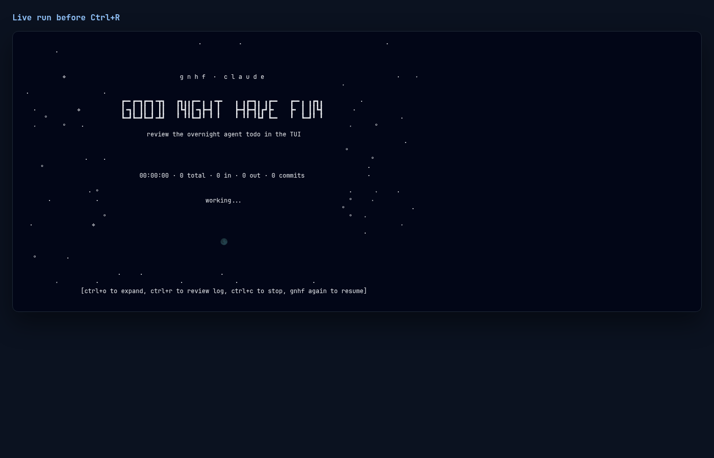
Ctrl+R overlay during a live run
02-live-review
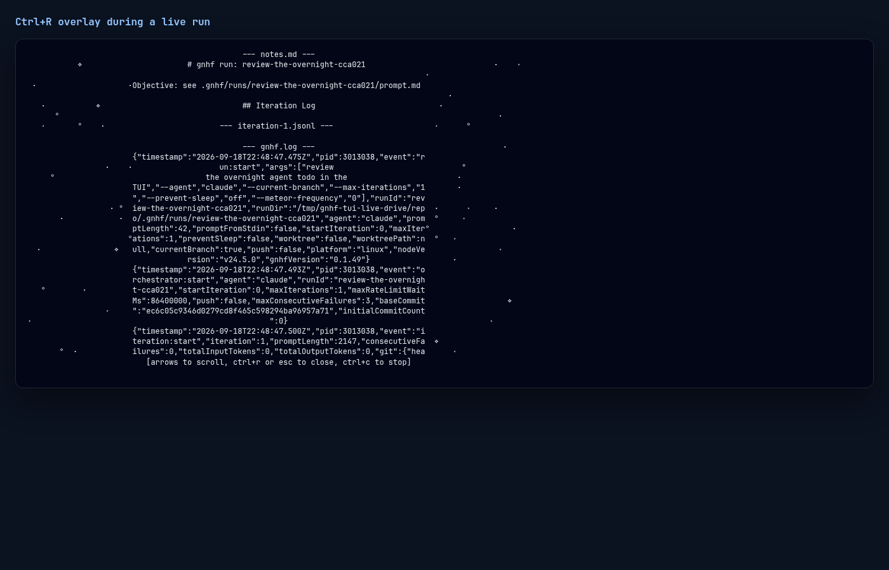
Ctrl+O live lastMessage unfold
03-ctrl-o-unfold
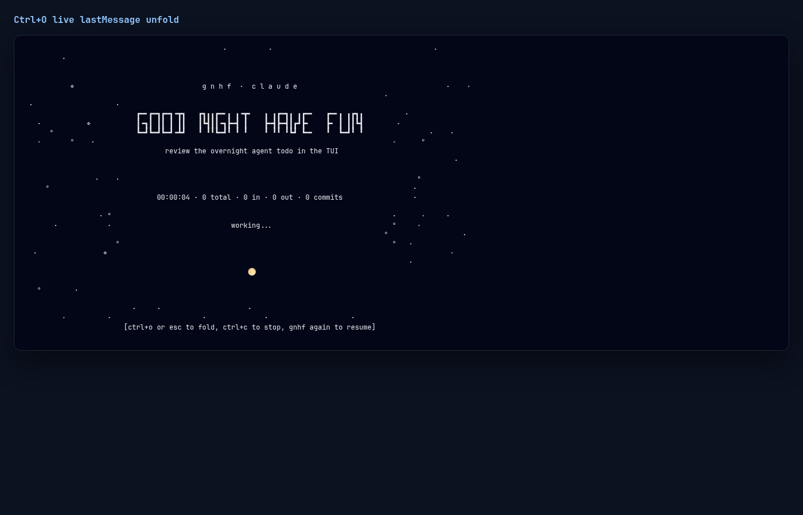
Finished-run done screen
04-done-screen
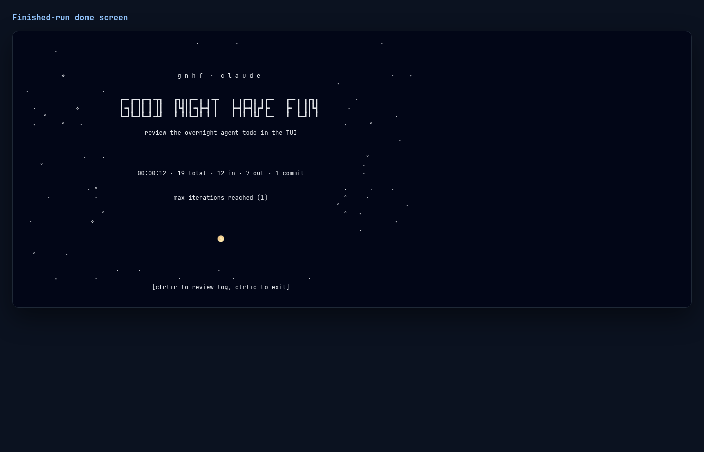
Morning review on the done screen
05-morning-review
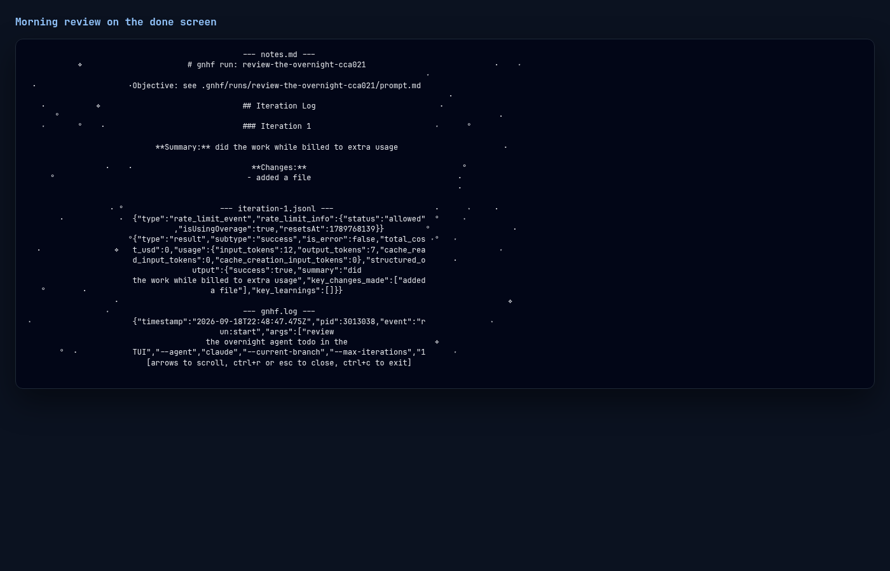
End-key scroll through the local log
06-scrolled-end
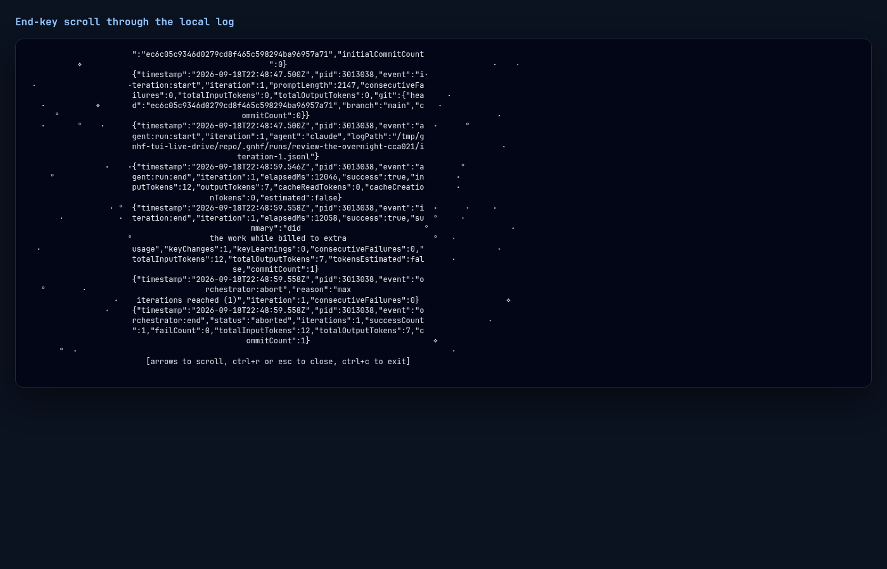
Ctrl+L redraw while the overlay is open
08-ctrl-l-refresh
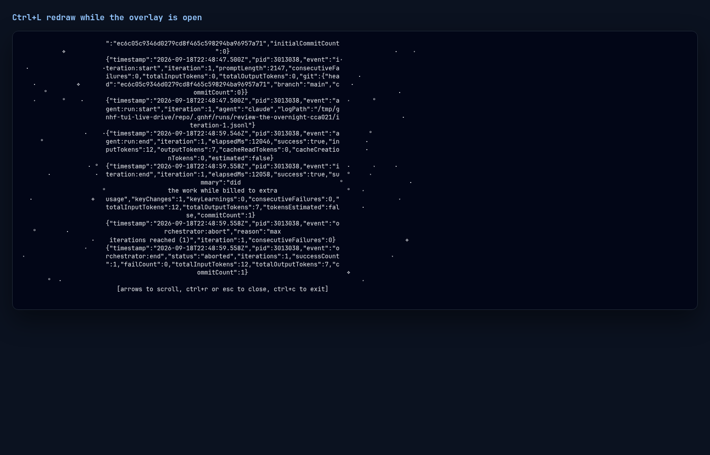
Open overlay refreshes when notes.md grows
12-growing-notes
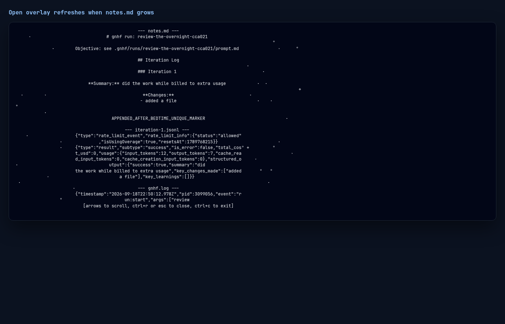
End-key scroll through a long appended gnhf.log
13-large-gnhf-log
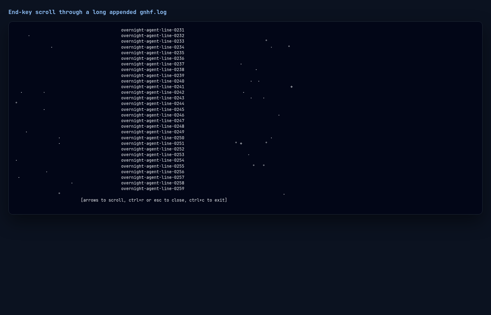
ANSI in gnhf.log stays printable
14-ansi-stripped
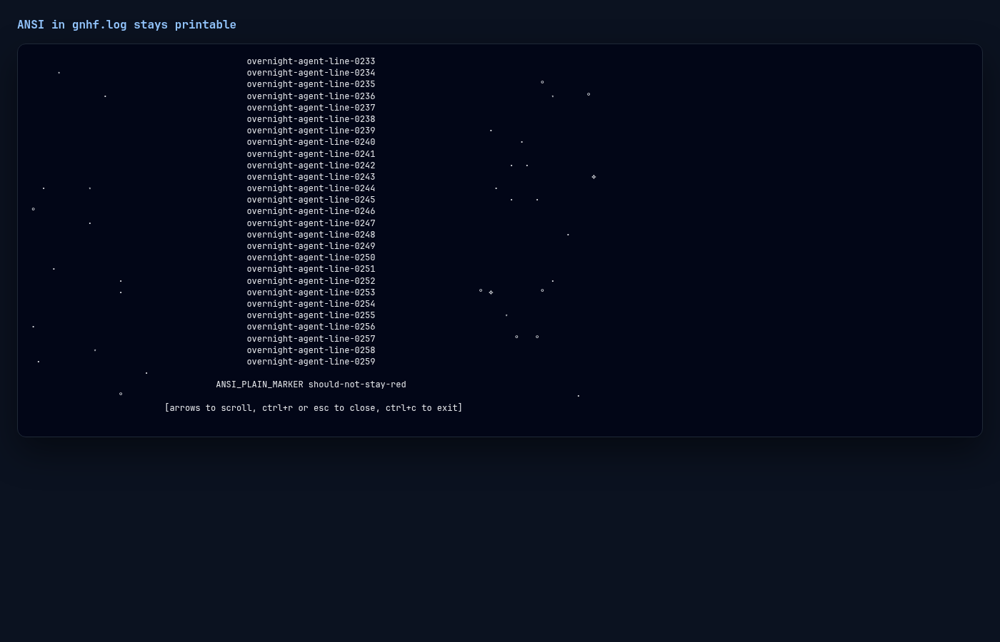
Ctrl+C exits from the done-screen overlay
15-ctrl-c-exit
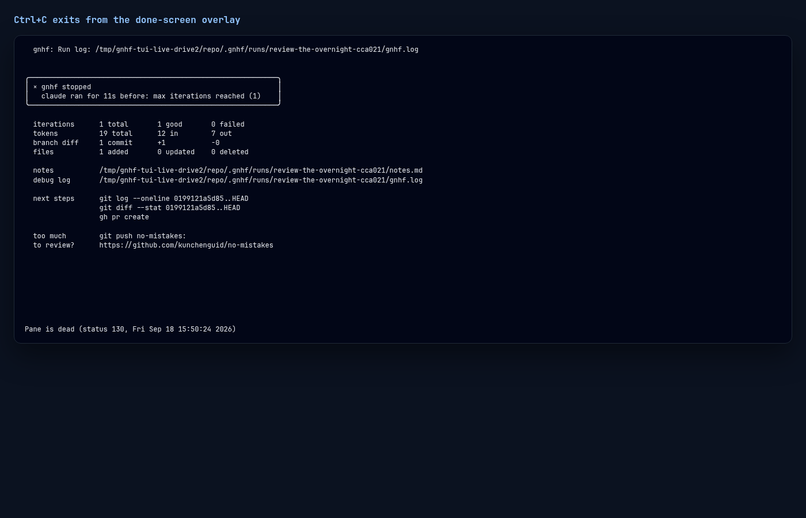